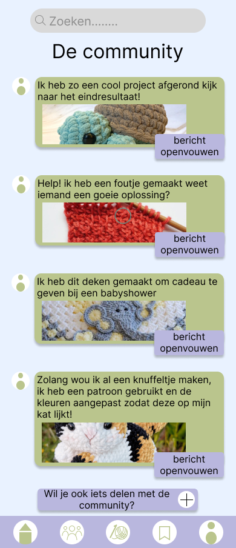
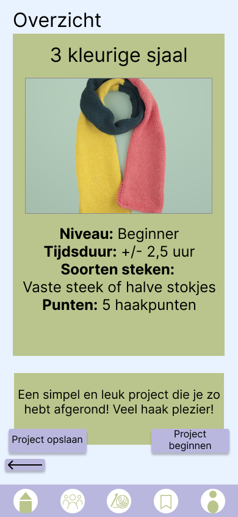
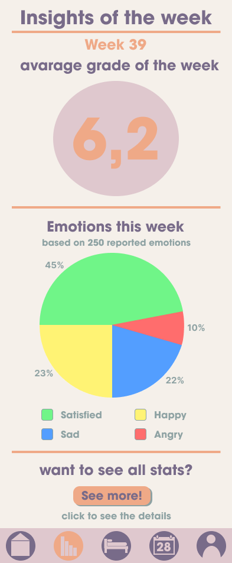
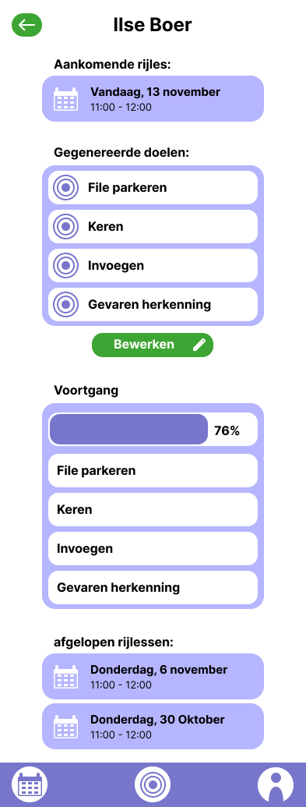
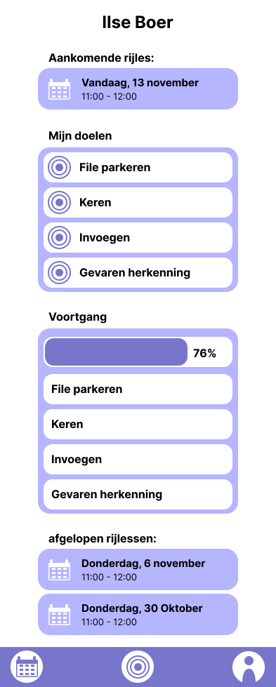

All
projects
Een verzameling van projecten waarin ik onderzoek, ontwerp, experimenteer en verschillende disciplines combineer.
01
UX / Interaction Design
Haak-app
Een digitale omgeving voor haakliefhebbers waarin projecten, patronen en community samenkomen.
UX / Interaction Design
Dit project draait om het ontwerpen van een digitale omgeving voor mensen die haken. De app combineert projecten, patronen, voortgang en community.



02
UX / UI Design
Content Delivery
Een dashboard waarin verschillende soorten informatie en persoonlijke inzichten samenkomen.
UX / UI Design
Een project waarin complexe informatie op een overzichtelijke manier toegankelijk wordt gemaakt door middel van dashboards en inzichten.



03
UX / Visual Design
VID
Een digitaal concept waarin informatie, interactie en visual design samenkomen.
UX / Visual Design
Een digitaal project waarin gebruikers door verschillende vormen van content en informatie kunnen navigeren.


04
UX / Interaction Design
Rijapp
Een digitale omgeving voor het organiseren en bijhouden van rijlessen.
UX / Interaction Design
Een digitale omgeving voor rijlessen waarin leerlingen en instructeurs verschillende informatie en voortgang kunnen bekijken.


05
Visual / Responsive Design
Vormgeving 2
Een responsive ontwerp waarin typografie, compositie en verschillende schermformaten centraal staan.
Visual / Responsive Design
Een ontwerp waarin ik verschillende schermformaten, composities en visuele richtingen heb onderzocht.


06
Visual Design
Vormgeving 1
Een visueel ontwerp waarin compositie, typografie en art direction centraal staan.
Visual Design
Een project waarbij visuele communicatie, typografie en compositie centraal stonden.

07
Information Architecture
Informatiearchitectuur
Een project waarin structuur, navigatie, informatiehiërarchie en gebruikersflows centraal staan.
Information Architecture
Een project gericht op het organiseren van informatie, navigatie en de structuur van een digitale omgeving.